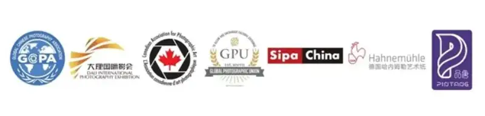
As light and shadow meet dreams, and shutters play a brilliant score, the GCPA Dajiang Cup 5th Global Chinese Photography International Competition has arrived. GCPA joins hands with the Dali International Photography Festival. The contest is now open, and we invite photographers around the world to take part.
In past GCPA contests we have seen countless striking moments, from grand nature to delicate human feeling. Every image carries the photographer's love of life and a unique reading of the world.
This contest has seven categories. They cover nature, portraits, street and city life, and new AI creative images. We encourage photographers to break the rules and use images to share inner feeling and thought.
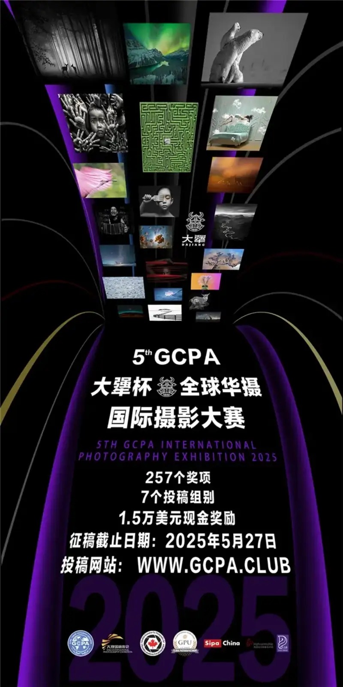
Co-organizers
Global Chinese Photography (GCPA), Dali International Photography Festival (DIPE)
Title sponsor
Dajiang Liquor
Supporting organizations
SIPA China (Chinese branch of the French SIPA photo agency)
Hahnemuhle art paper
Pintang Culture and Art
Accrediting organizations
International Union of Photographers (GPU) L250058
Canadian Association for Photographic Art (CAPA)
Contact email:
contest2020@gcpa.photo
Contest website: http://www.gcpa.club
Submission period: March 15 to May 27, 2025
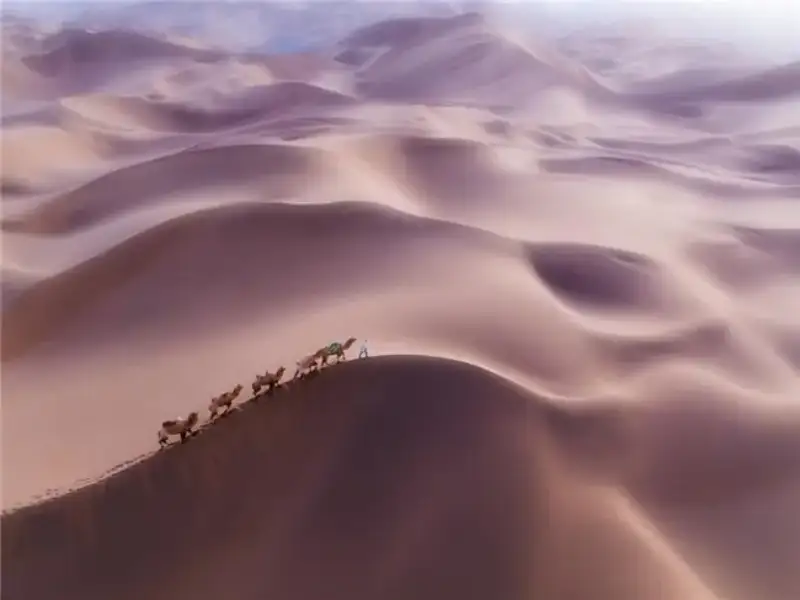
4th GCPA International Photography Competition, Color Landscape Drone category, Gold medal Camel bell - Bin Zhang - China
Awards
[GCPA Dajiang Cup] Total prize money: 15,000 USD
Overall gold award, 1 winner: 5,000 USD, trophy, and certificate
Overall silver award, 3 winners: 2,000 USD each, trophy, and certificate
Overall bronze award, 5 winners: 800 USD each, trophy, and certificate
Medals and ribbons
GPU gold medals 6, silver medals 6, bronze medals 6, GPU ribbon awards 36
CAPA gold medals 6, silver medals 6, bronze medals 6
GCPA gold medals 7, silver medals 14, bronze medals 21, GCPA ribbon awards 70
Contest chair recommendation award, 7 winners (GCPA medal)
Judge recommendation award, 21 winners (GCPA medal)
GCPA Dajiang Cup excellence award, 35 winners (certificate)
• Best club award
• Best club organization and participation award
Exhibition
All winning works will be shown during the Dali International Photography Festival, and an awards ceremony will be held.
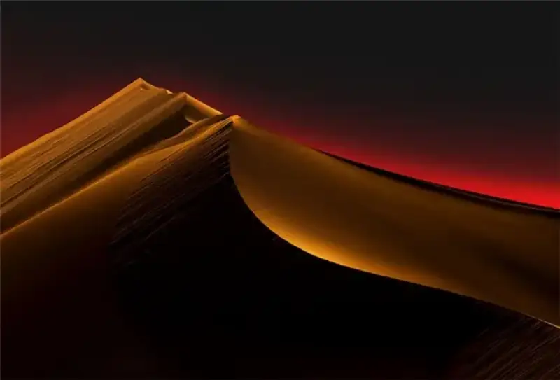
4th GCPA International Photography Competition, Color Open category, Gold medal - The Way to the Sky - Feng Li - China
Contest categories
This contest has seven submission categories. Six are accredited by GPU and CAPA. The seventh, the AI Creative Images category, is not accredited.
1. Color Open, no set theme: color images only.
2. Monochrome Open, no set theme (Monochrome Open): black and white images only.
3. Nature: color and black and white accepted.
4. People-theme and Portrait (People-theme & Portrait): color and black and white accepted.
5. Color Landscape, including drone (Landscape-General & Drone): color images only.
6. Street and City Life (Street&City Life): color and black and white accepted.
7. AI Creative (AI Creative).
You may enter up to 4 images per category (28 images across 7 categories).
The same image may enter only one category. Do not enter it twice.
Images that were shortlisted or won in past GCPA contests may not be entered this year.

4th GCPA International Photography Competition, Color Open category, Gold medal - Buzzer midge christmas tree - Pedro Luis Ajuriaguerra Saiz - Spain
Entry fees
This contest charges entry fees under international accreditation rules. Entry fees are not refunded. You must pay the fee when you submit your images.
Entering any one category or all categories costs only 10 USD. In mainland China, the fee is 70 RMB.
The organizer will not review entries for which no fee has been paid.
You may pay by PayPal (USD) on the official website http://www.gcpa.club, or by WeChat QR code or Alipay (RMB).
When you pay in RMB, you must put the payment reference code generated by the website and your name in the note field of WeChat or Alipay.
For questions about group entry, email contest2020@gcpa.photo.
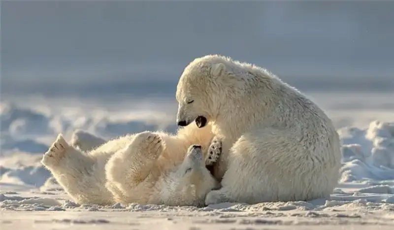
4th GCPA International Photography Competition, Color Open category, Judge recommendation - Play 102 - Hung Tsui - Hong Kong, China
Full rules are on the contest website.
Image specifications and requirements
• All entries must be submitted on the website http://www.gcpa.club.
• Uploaded images must be JPG in sRGB color space. The long side must not exceed 1920 pixels, or the short side must not exceed 1080 pixels, at 300 dpi. The file must not exceed 4MB. Images smaller than 1920x1080 pixels will look worse.
• No author logo, mark, watermark, name, or signature may appear anywhere in the image.
• First-time entrants must complete registration accurately, including name (pinyin or English), address, email, and phone. The organizer keeps private entrant information confidential.
• Returning entrants may log in directly with their account and password.
• Before you upload, prepare the English title of each image. Then go to the submission page and upload the images to the chosen category.
• Chinese titles are not accepted by the site. English titles must be no longer than 35 letters.
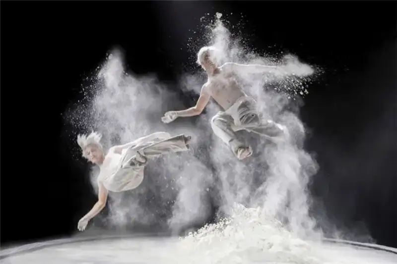
4th GCPA International Photography Competition, Color Open category, Ribbon Street Dance 02 - Shin Woo Ryu - South Korea
A Category definitions (part 1)
This Chinese translation of the category definitions is for reference only. For the full definitions, see the contest website. The English rules are the authority.
Statement about subjects (applies to all categories)
The basic rule, at all times, is that the welfare of the living subject matters more than any photo. This means it is unethical to use live bait or to remove birds from a nest to get a picture. No GPU or CAPA accredited contest allows such photos. Under no circumstances may you put a live animal at risk of death or injury to take a photo. Under no circumstances may you photograph a live animal being fed to a caged animal, bird, or reptile.
When you use a drone, helicopter, or low-flying plane, you must not disturb other people or animals, or change how they interact with their surroundings. You must follow all local laws about aerial photography in the country where you fly.
Entering a GPU or CAPA accredited contest means you accept these principles. The content of your images must meet the rules for each category on the website. The judges will disqualify images that break the rules.
GCPA category definitions:
Monochrome category definition:
An image is monochrome only if it looks colorless, that is, made only of tones from pure black to pure white. Or it may look like a grayscale image fully adjusted to a single color, such as sepia, red, or gold.
A modified grayscale or color image, or one adjusted by local toning, multiple toning, or spot color, is not monochrome. It must be classed as color.
Note: the monochrome category accepts black and white photos only. It does not accept toned images such as sepia, red, or gold.
Color Landscape (including drone)
Images in this category explore beautiful scenery anywhere on Earth: mountains, oceans, and cities. They feature environment and landscape, city and architecture, including built scenes, natural scenes, or both. Images may come from any viewpoint, place, or time, taken with a wide lens, a telephoto lens, or a drone. They show the beauty of nature and the city through the photographer's creative eye.
People and animals may appear, but they must not be the main subject. The image must be about the environment. People or animals should be a small part, just part of the natural scene. The grand, beautiful landscape and environment are the main subject.
People-theme and Portrait
Any image in which people in daily life are the subject. Men, women, or children, together or alone, including portraits. Images of a person or group that capture and show the subject's expression and personality. This category always encourages portraits that are artistic, creative, and fresh. Portraits taken in or outside the studio are accepted.
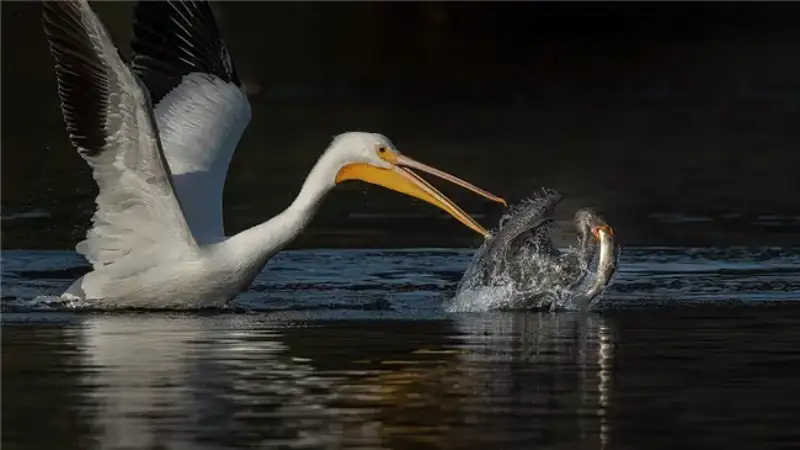
4th GCPA International Photography Competition, Nature category, Gold medal - The crisis behind the harvest - Xiao Xiao - USA
B Category definitions (part 2)
This Chinese translation of the category definitions is for reference only. For the full definitions, see the contest website. The English rules are the authority.
Nature category guidelines
• Nature photography records all branches of natural history except anthropology and archaeology. This includes all parts of the physical world, above and below water. A nature image must show the scene as real. A knowledgeable viewer should recognize the subject and trust that the image is real, with no unethical control of the subject. Images may not show any human activity that directly or indirectly threatens the life or welfare of a living thing.
• The most important part of a nature image is the natural story it tells. Technical standards are high, and the image must look natural.
• Human-made objects and signs of human activity may appear only when they are a necessary part of the natural story.
• Images of man-made hybrid plants, cultivated plants, wildlife, domestic animals, man-made hybrid animals, or mounted or preserved animal specimens are not accepted.
• Images are accepted where the setting is natural and the animal is unharmed in a well-managed place, such as a zoo, rescue center, or ethical wildlife farm.
• You may not attract or control the subject with food or sound in order to take a photo. If supplementary food is offered because of weather or other conditions the animal cannot control, and the photo is taken incidentally while the animal is fed, this rule does not apply.
• You may not freeze, anesthetize, or otherwise restrict the natural movement of a subject to take a photo.
• Human-made elements are allowed in these cases:
a) The human element is an inseparable part of the natural story, such as a songbird on a fence post, a man-made object used as nest material, or weather that damages a man-made structure.
b) They are a small but unavoidable part of the scene, such as faint footprints in the background.
c) Scientific tags, collars, and bands are specifically allowed.
• When shooting in a zoo, reserve, or rescue center, the photographer must hold proper accreditation and follow best practice.
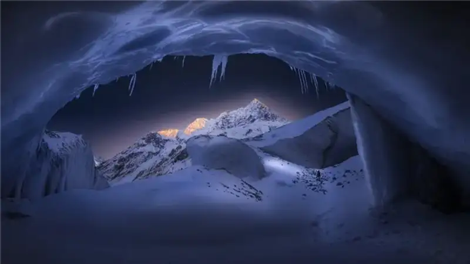
4th GCPA International Photography Competition, Color Landscape category, Chair recommendation - Ice Age - HaoRan Zhu - China
C Post-processing guidelines for the Nature category
Post-processing in the Nature category must be limited to making the image look as close to the original scene as possible. Conversion to black and white is allowed.
Allowed adjustments:
• Cropping, straightening, and perspective correction.
• Removing or fixing dust spots, noise, chromatic aberration, and lens distortion from the camera or lens.
• Global and local selective adjustments, such as brightness, tone, saturation, and contrast, to restore the look of the original scene.
• Converting a color image to black and white (monochrome).
• Combining multiple images of the same subject in camera or in software (exposure blending or focus stacking).
• Stitching images, that is, combining overlapping frames taken in sequence (panoramas).
Disallowed adjustments:
• Removing, adding, moving, or changing any part or element of the image, except cropping and straightening.
• Adding a halo around the image in post-processing.
• Blurring part of the image to hide elements in the original scene.
• Darkening part of the image to hide elements in the original scene.
• Any conversion other than full conversion to black and white.
• Converting part of an image to black and white, or partial toning, or partially reducing or raising saturation.
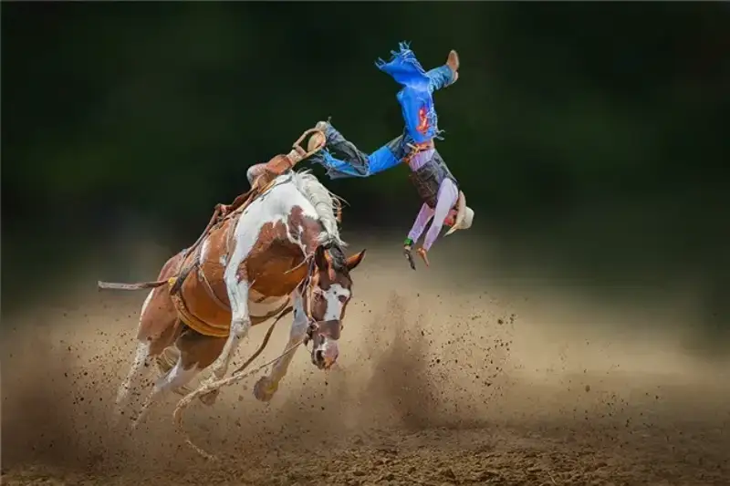
4th GCPA International Photography Competition, Color Open category, Ribbon - John Jiang - Australia
D Data protection
By entering this contest, you clearly agree that the organizer may store, process, and use the personal data you provide, including your address and email, for purposes related to the contest. You also agree that this information may be sent to the organizations that accredit or sponsor the contest. You confirm and accept that your entry status, including your name, the country you registered with, the number of categories you entered, and the number and result of your images in those categories, may be made public. Your results will also be shown in the exhibition gallery and catalog.
Image creation and ownership
In categories 1 to 6, images must be photographs taken by the entrant. You may not use recognizable images made by others, such as clip art, a replaced sky, or stock images. You may not use image-generation software, often called AI image software, to make all or part of an image. Post-processing or modification is allowed within the rules of the relevant category. Any image fully or partly created by AI must be entered in category 7.
Note
When entrants submit the entry form, they confirm that they have read the rules and the following:
I confirm that I have read, understood, and agree to the rules of this contest.
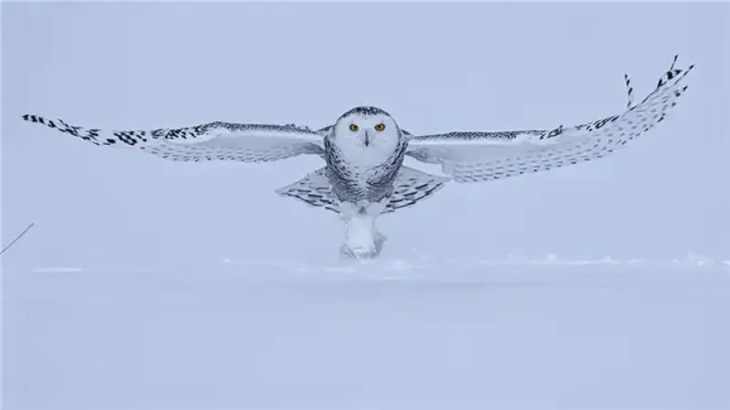
4th GCPA International Photography Competition, Nature bird theme, Gold medal - Snowy Owl - Jia Chen - Canada
E Jury
The jury holds PSA, FIAP, and GPU distinctions. It includes chairs, senior fellows, and internationally known contest judges, photographers, and collectors from leading photography bodies in China, Canada, the United States, Malaysia, and Australia.
Contest chair: Mr. Duan Yueheng (Canada).
● Mr. Jin Hongwei (USA), the largest collector of Chinese photography in the world, and chairman of SIPA, one of the world's four major photo agencies.
● Mr. Bao Lihui (China), board member of the China Photographers Association, member of the curatorial committee, vice president of the China Folk Photography Association, artistic director of the Dali International Photography Festival, and chair of the Yunnan Photographers Association.
● Ms. Xinxin Cecilia Liang (USA), board member of the New York Photographic Society, director of the PSA Chinese Language Study Group, holder of the PSA APSA and MPSA distinctions, and EFIAP.
● Mr. Lung-Tsai Wang (Taiwan, China), PSA Taiwan membership director, holder of the PSA GMPSA distinction.
● Mr. Harry Woo (Malaysia), president of the Photographic Society of Malaysia, holder of the PSA APSA and GMPSA distinctions.
● Ms. Guo Cheng (China), vice president of GPU, chair of GPU China, art advisor to Shangtufang, chair of the RPS China Shangtufang chapter, holder of EPSA, EFIAP, LRPS, GPUCR-3, and GPU Hermes.
● Mr. Yip Xu (Australia), president of the Australian Horizon Photography Club, fellow of the Australian Photographic Society (FAPS), holder of EFIAP and EPSA.
● Ms. Ye Danlei (Canada), executive vice president of GCPA, holder of the PSA GMPSA/P distinction, ARPS, and EFIAP/S.
● Mr. Yue Hongjun (China), executive chair of GCPA, fellow of the Royal Photographic Society (FRPS), holder of the PSA MPSA distinction, winner of the China Photography Gold Award, and vice chair of the Shenzhen Photographers Association.
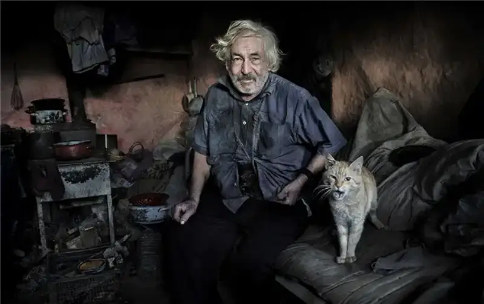
4th GCPA International Photography Competition, Color Portrait category, Silver medal - Old man and the cat - Istvan Kerekes - Hungary
F Results and catalog
• Results and the PDF catalog will be posted on the website and can be downloaded at http://www.gcpa.club.
• Results will be sent by email. Entrants must provide a valid email address and set their spam filter to accept mail from contest2020@gcpa.photo.
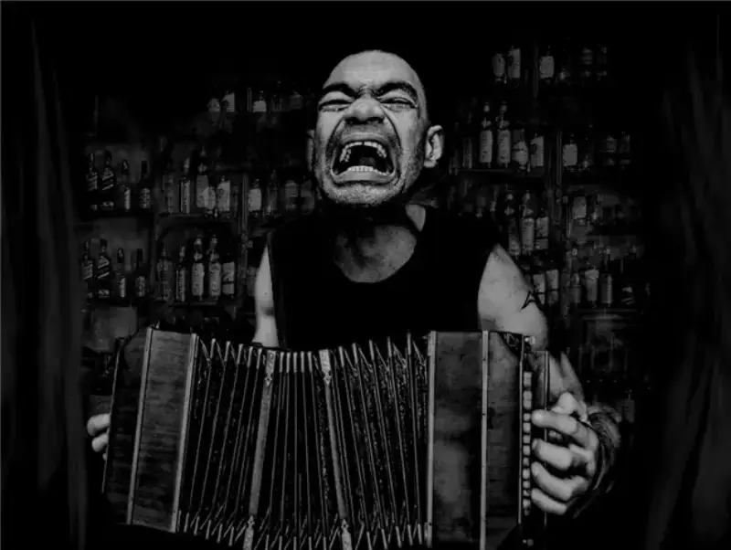
4th GCPA International Photography Competition, Monochrome Open category, Gold medal - The cry - Raul Villalba - Argentina
G Schedule
Submission deadline: May 27, 2025 (North American Pacific time).
Judging ends: June 10, 2025.
Results notified: June 15, 2025.
Medals mailed: August 10, 2025.
Digital catalog published: August 10, 2025.
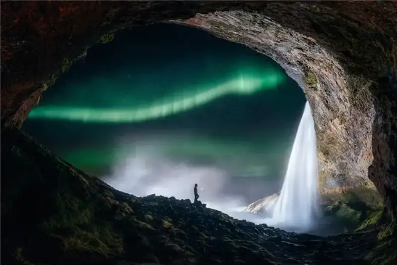
4th GCPA International Photography Competition, Color Landscape Starry Sky category, Chair recommendation - The world in a moment - Tie Su - China
I Other award-winning works
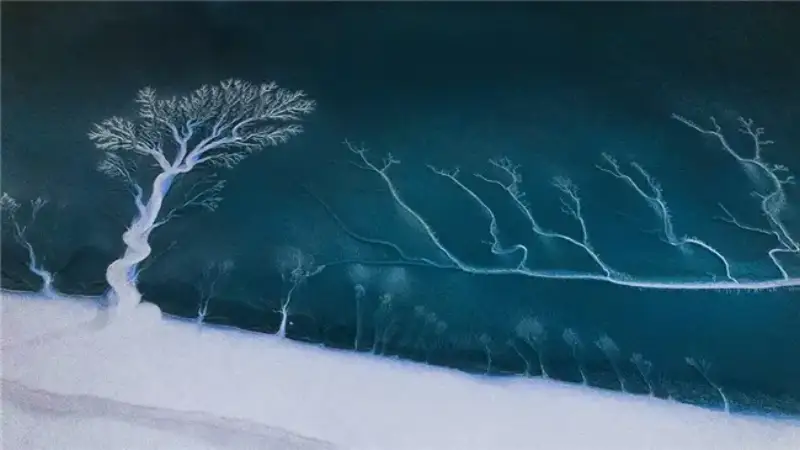
4th GCPA International Photography Competition, Color Landscape Drone category, Gold medal - Earth CT - Zhenmei Shao - China
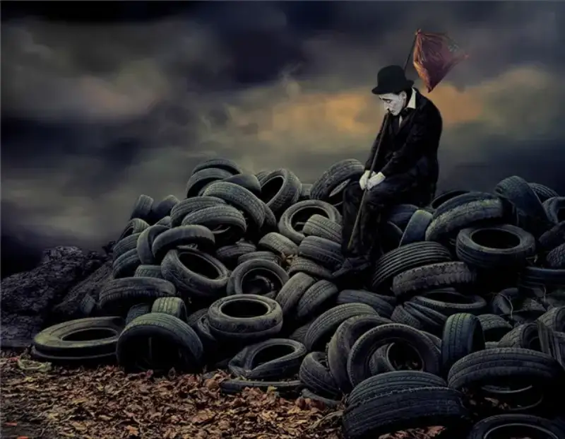
4th GCPA International Photography Competition, Color Open category, Silver medal Polution - Raul Villalba - Argentina
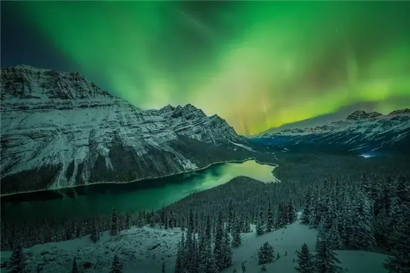
4th GCPA International Photography Competition, Color Landscape Starry Sky category, Gold medal Peyto Lake Aurora - Yongnan Li - Canada
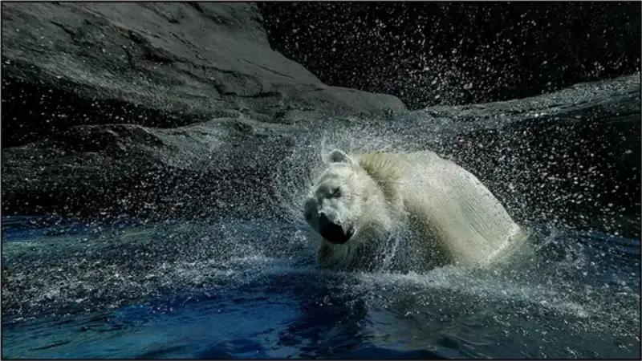
4th GCPA International Photography Competition, Nature category, Bronze medal Wasserspass - Josef Loibl - Austria
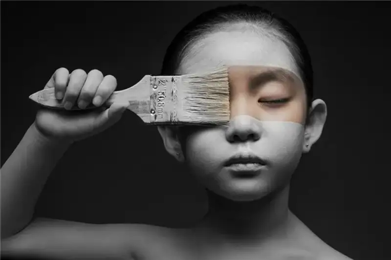
4th GCPA International Photography Competition, Portrait category, Silver medal - Monochrome world - Jie Zhang - China
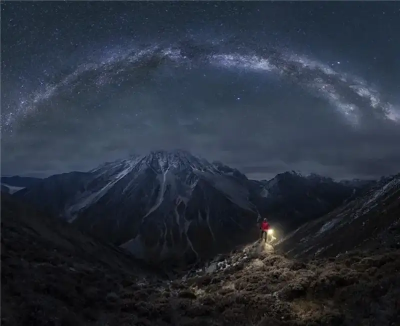
4th GCPA International Photography Competition, Color Landscape Starry Sky category, Gold medal Mt. Yala and galaxy - Minghao HOU - China
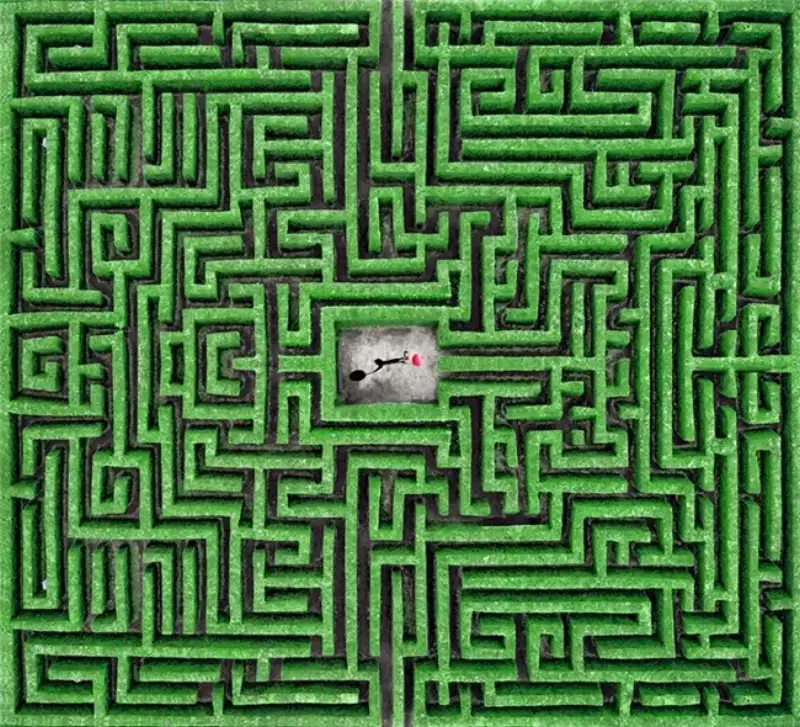
4th GCPA International Photography Competition, Color Landscape Drone category, Silver medal The Child of Labyrinth - Pedro Luis Ajuriaguerra Saiz - Spain
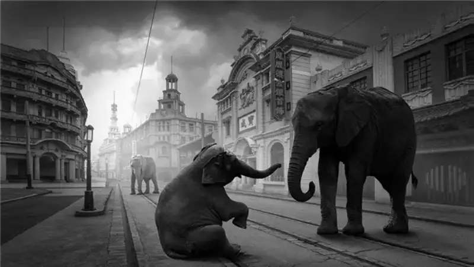
4th GCPA International Photography Competition, Monochrome Open category, Gold medal Hello - Hong Zhao - China
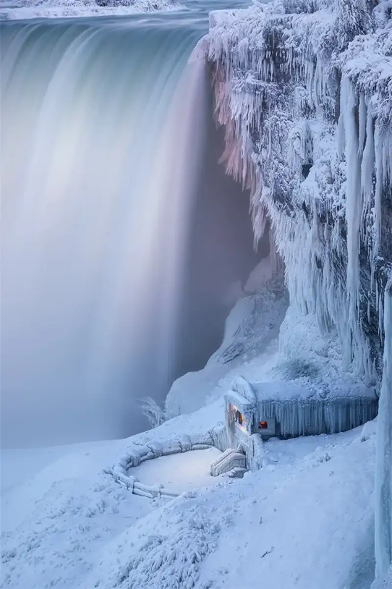
4th GCPA International Photography Competition, Color Open category, Ribbon Frozen - Zhenhuan Zhou - Canada